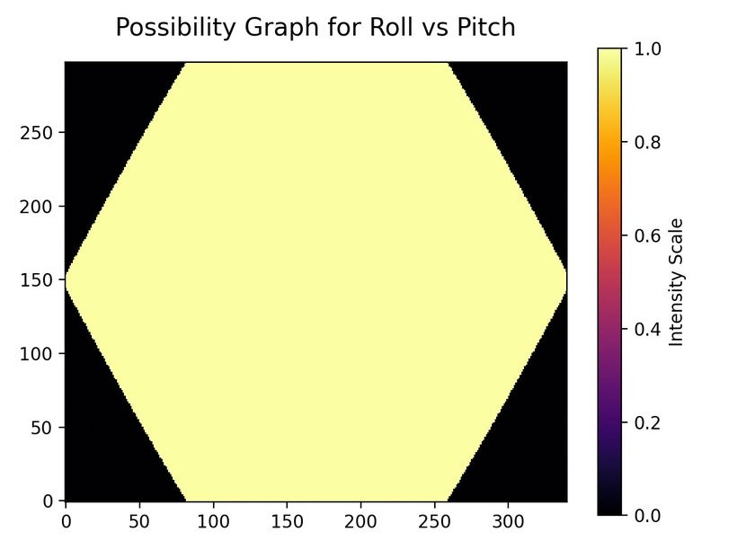

🎯
world =cos ψ−sin ψsin ψcos ψab= a ·cos ψsin ψ+ b ·−sin ψcos ψ
body = Rᵀ · world =cos ψsin ψ−sin ψcos ψ· world


Rz(yaw) =cos−sin0sincos0001Ry(pitch) =cos0sin010−sin0cosRx(roll) =1000cos−sin0sincos
R = Rz(yaw) · Ry(pitch) · Rx(roll)
pᴸᵢ = Rz(−αᵢ) · ( Rᵀ · (fᵢ − t) − mᵢ )
| fᵢ | |
| t | |
| R | |
| pᴮ | |
| mᵢ, αᵢ | |
| pᴸᵢ |



joint speed ≈ (θ(t + Δt) − θ(t)) / Δt Δt = 1/50 s
- 1
- 2
- 3
- 4
- ★
- 🤖